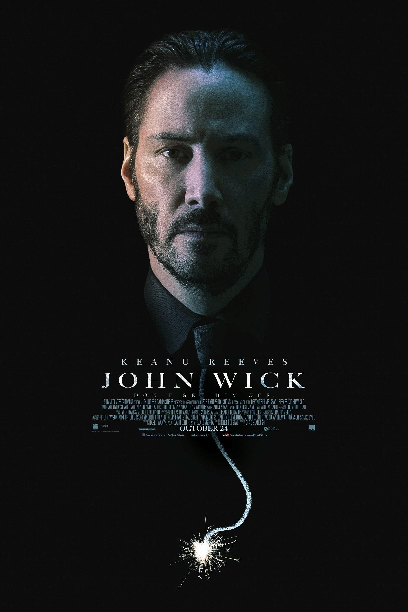

Сол: 2014
Жанр: Боевик, Триллер, Криминал
Коргардон: Chad Stahelski
Ҷон Уик як қотили касбӣ мебошад, ки баъди аз даст додани чизҳои азизаш ба ҷаҳони гузашта бармегардад ва барои интиқом мубориза мебарад.